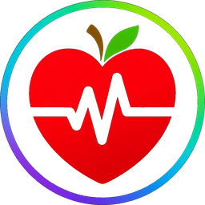

In the works
What Doctors Wish You Knew
Search the explanations a good doctor would give,if the visit never had to end.
We’re building a free, doctor-founded home for health answers anyone can understand — because bad information does real harm, and understanding can change everything.For you, and the people you love.
Worth getting right — so we’re taking the time.